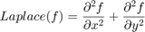
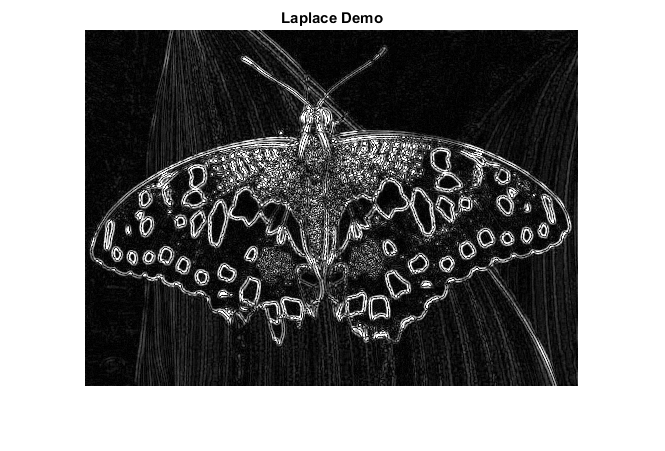

Laplace Operator
In this demo, we show how to use the OpenCV function cv.Laplacian to implement a discrete analog of the Laplacian operator.
Sources:
Contents
Theory
In a previous demo, we learned how to use the Sobel Operator. It was based on the fact that in the edge area, the pixel intensity shows a "jump" or a high variation of intensity. Getting the first derivative of the intensity, we observed that an edge is characterized by a maximum, as it can be seen in the figure:

And what happens if we take the second derivative?

You can observe that the second derivative is zero! So, we can also use this criterion to attempt to detect edges in an image. However, note that zeros will not only appear in edges (they can actually appear in other meaningless locations); this can be solved by applying filtering where needed.
Laplacian Operator
From the explanation above, we deduce that the second derivative can be used to detect edges. Since images are "2D", we would need to take the derivative in both dimensions. Here, the Laplacian operator comes handy.
The Laplacian operator is defined by:

The Laplacian operator is implemented in OpenCV by the function cv.Laplacian. In fact, since the Laplacian uses the gradient of images, it calls internally the Sobel operator to perform its computation.
Code
The program:
- Loads an image
- Remove noise by applying a Gaussian blur and then convert the original image to grayscale
- Applies a Laplacian operator to the grayscale image and stores the output image
- Display the result in a window
load source image
src = cv.imread(fullfile(mexopencv.root(),'test','butterfly.jpg'), 'Color',true);
apply a Gaussian blur to reduce the noise
src = cv.GaussianBlur(src, 'KSize',[3 3]);convert filtered image to grayscale
gray = cv.cvtColor(src, 'RGB2GRAY');apply the Laplacian operator to the grayscale image (input is 8-bit, we set the output image depth to 16-bit to avoid overflow)
dst = cv.Laplacian(gray, 'KSize',3, 'DDepth','int16');
take absolute value and convert results back to 8-bit
dstabs = cv.convertScaleAbs(dst);
show result
imshow(dstabs)
title('Laplace Demo')